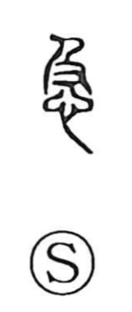

急

Uncategorized
Kun: isogu, sumiyaka | On: kyuu
urgent ・ to hurry ・ swift ・ sudden
Explanation
A phono-semantic character: 及 serves as the sound marker and originally depicts a hand reaching from behind to catch someone ahead, “to reach.” With 心, the heart, placed beneath 及, the graph comes to picture a heart or mind straining to catch up—hence the senses “to hurry” and “prompt, at once,” and by extension matters that demand immediate attention. In earlier forms the middle element was clearly 又, a hand, but in later standard writing this hand was reduced to a simplified stroke, obscuring the image of the outstretched hand that tries to overtake.